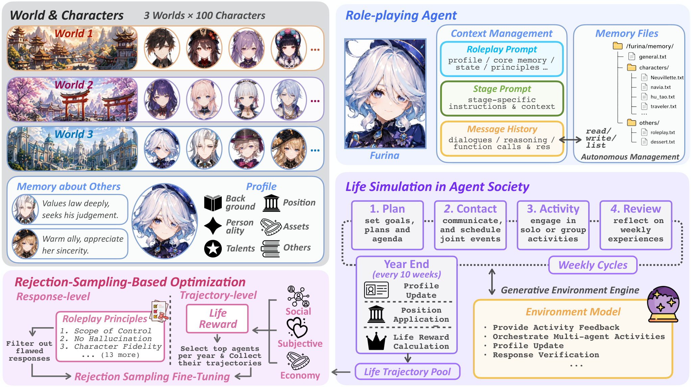

01研究背景与问题定义
一个角色能聊得像人，或者一群角色能办成一次活动，并不意味着系统能表现出多年关系变化、职业选择与生活取舍。要观察这些过程，需要让角色持续经历有后果的互动；但如果大量模型调用都用于移动、拿取物品等细小动作，延长模拟就会付出很高成本。与此同时，模拟出故事之后，仍缺少一个明确环节，把这些经历转成改进底层模型的训练材料。
Agentopia 同时处理两个问题：怎样在可承受的计算量下运行长期社会生活，怎样从这种生活中筛选值得学习的行为。它把模拟单位提升到按周组织的计划、通信、活动和复盘，由环境模型解释开放行动的结果，再按年度计算“生活奖励”，选择进步较大的角色经历进行监督微调。系统的研究对象因而既包括角色社会的运行，也包括从合成社会经验中构造训练数据。
长期模拟需要改变行动粒度，也需要结果反馈
| 障碍 | 直接延长运行仍留下的问题 | Agentopia 的改变 |
|---|---|---|
| 细小动作占用计算 | 调用量增长很快，却不一定增加关系发展、人生选择等有效互动。 | 抽象掉低层物理操作，以周阶段和每日一个活动槽推进社会生活。 |
| 开放活动没有统一结果规则 | 只让角色写“做成了什么”，容易让意图直接变成成功，甚至替别人决定反应。 | 角色提出自身行动，环境模型判断可行性与后果，程序落实日程和状态规则。 |
| 经历丰富不等于训练样本优质 | 高地位或富裕角色容易得高分，却未必作出了更好的选择。 | 用未来奖励相对自身过去的改善选轨迹，再过滤并微调。 |
其中，“多年”必须按论文的时间定义理解：实验中每个模拟年为 10 周，每周 5 个活动日，所以 10 年对应 100 个抽象周、每人 500 个每日活动槽。作者明确说明日、周、年是分层的抽象时间，不严格对应现实日历。这样的设计让长时程社会情节变得可计算，也跳过了连续感知、自由时间分配和大量日常过程；它本身就是模拟假设的一部分。
还需要区分两种“学习”。角色在模拟中更新记忆、技能数值或人物档案，使同一个固定模型在不同状态下作出不同选择；底层模型的学习，则发生在收集轨迹后对权重做监督微调。前者说明角色状态可以发展，后者才检验合成生活经验能否转移成模型能力。长期运行的数据并不会自动变成可靠的学习信号，关键仍在于环境怎样反馈、奖励偏好什么，以及筛选规则留下了什么。
02方法与技术路线
Agentopia 将“运行社会”和“训练模型”连成两个循环。运行中，角色根据自己的状态、记忆与阶段输入行动；环境模型给出社会情境和结果，程序处理有效性与资源约束。年度结果形成奖励和轨迹，离线筛选后才进入模型训练，训练后的模型再用于新的模拟与外部评测。
原论文总览图：世界构造、角色、社会模拟与训练


Persona 与 Memory Files：跨阶段保留什么
每个角色由人物档案、对他人的记忆和动态状态组成。档案包括背景、性格、天赋、价值观等，按年依据经历更新；精力、四维满足度、技能、职位与资产则随生活过程变化。关系主要写在“我如何认识和看待某人”的自由文本记忆里，能够表达单向好感、竞争或疏远，不要求始终把双方放进统一的朋友、恋人或敌人标签。
角色拥有个人笔记、人物笔记和其他主题文件，可通过读取、更新、列举三个工具主动维护。系统强制同次调用中先读再更新已有文件，避免模型在没有看到旧内容时直接覆盖。这个约束保护更新过程，但保留哪些经历、怎样修订印象仍由角色模型判断。论文没有采用把全部历史统一做向量检索的固定方案，完整文件主要靠角色按需读取。
| 层次 | 模型读到的内容 | 何时保留或重建 |
|---|---|---|
| Roleplay prompt | 自身档案与状态、世界规则（含奖励规则）、近期周记/活动历史、记忆摘要、位置等。 | 每次重新组装；负责把过去经历带入新阶段。 |
| Stage prompt | 当前阶段的任务、可用日程、通信记录、活动参与者和操作规则。 | 随计划、联系、活动、复盘等阶段改变。 |
| Message history | 本阶段的多轮对话、工具请求与结果、压缩后的推理记录。 | 阶段内累积，阶段切换时清空。 |
记忆摘要按访问近期性排序；认识的人超过 50 名时，提示只展示最近访问的 50 名，但保证当前互动对象被纳入，其他人的完整文件仍可主动读取。开放模型的显式推理还会经一次额外调用压成约 200 词摘要，供后续阶段使用。这样控制了每次输入的组织方式，却没有让长期记忆的读取成本消失；摘要持续增长和主动取回仍要消耗计算。
Plan、Contact、Activity、Review：从生活意图到可执行日程
每周先结算固定收入与状态衰减，再让角色计划本周。角色选择消费水平，使物质生活与存款发生取舍。情绪、社交、尊重满足度按当前数值每周衰减 15%，物质满足度由消费机制处理、不额外衰减。这是系统预设的持续需求机制：即使角色没有新的目标，维持满意状态也需要继续活动。
公共事件由环境模型在 Contact 前生成，角色按兴趣报名；随后通过 5 轮通信安排联合活动。每轮全体角色读取新收到的信息，发出下一批动作，类似分轮的消息往来。日程不会因一句“愿意参加”自动成立，必须提出正式活动，并用正式接受或拒绝动作回应。所有联系轮结束后，程序统一处理取消、最后一次回应和时间冲突，才创建有效活动。
| 类型 | 如何进入 | 执行方式与信息边界 |
|---|---|---|
| Joint · 联合 | 角色正式提议、受邀者接受，程序确认日程。 | 多人轮流交谈；允许私密思想、定向发言、赠礼与提前离场。 |
| Public · 公共 | 环境生成开放事件，角色自行报名。 | 各自行动后看到他人的活动摘要，通常没有共同的现场多轮对话。 |
| Encounter · 偶遇 | Contact 后，环境为没有安排的角色创造相遇。 | 沿用联合活动的多轮流程；接触机会由环境编排。 |
| Solo · 独处 | 当天没有其他有效活动时默认进入。 | 角色描述学习、工作、休闲或消费意图，环境判断是否可行并给结果。 |
每天每人执行一个活动槽，构建当天日程时按联合、公共、偶遇、独处的次序优先安排。活动后，环境给出结果和状态变化，角色反思经历并可写记忆；周末再写周记。全体角色同步进入相同阶段，阶段内独立角色和不同活动可以并发，但一次多人活动里的轮流交谈仍有先后。这种组织方式降低了异步世界的调度复杂度，也限制了角色随时打断、自由切换活动的能力。
Environment Model 与程序控制：谁决定行动后果
环境模型是一个无状态 LLM：每次根据请求提供的场景与角色信息生成反馈，不拥有一段独立持续的人生记忆。它创建事件、选择下一位说话者、判断活动结果、评价求职者，并在年末依据全年经历更新人物档案。角色只控制自己的行动和话语，不能凭一句叙述宣布成功，也不能替别人规定心理反应。结果判断交给环境，才让“想做什么”和“实际得到什么”分开。
这一开放判断仍由程序规则支撑。错误地点、无效人物、越界时间等动作被丢弃，原因进入下一轮提示；赠礼需要校验所有权并实际转移物品。日程冲突优先保留以前周已确认的联合活动，再依次考虑本人新提议、本人新接受的联合活动等。新活动只有发起者未因冲突退出、所有指定必到者接受，且至少一名受邀者接受时才创建。模型判断语义，程序落实这些明确条件。
联合和偶遇活动默认持续 5–20 轮，环境在最低轮数后可结束，达到上限则终止；提前离场后不足两人也会结束。环境还依据 16 条角色原则标记幻觉、越权、人设不一致、助手腔等不合格回答，训练构造时将其排除。论文对运行中的拒绝是否回滚、重采样或移除对话交代不足，因此不能把这项检查理解成已经实现了可靠的实时纠错保证。
经济与职业也包含明确设计：职位自动带来工资和部分技能增长；生活标准与消费影响物质满足，净储蓄则影响经济奖励。年末角色按偏好申请职位，在名额与能力要求下竞争，由环境模型评定。职业阶梯、有限职位和持续需求提供了长期行为的结构，社会故事是在这些条件内生成的。
说明性示例：口头同意怎样变成正式联合活动
依据 §3.3、B.3 构造的流程示例，人物、活动与文字为说明用途。
正式动作、程序确认与自然语言意愿是三个不同环节。它们让系统能够判定某场活动是否存在，同时也把日程规则作为外部约束施加给角色。
Life Reward：把认可、满足和储蓄转成年度目标
年末先更新人物档案、处理职位申请，再计算生活奖励。三个分量分别描述社会地位、全年满足与净储蓄；这些分数来自其他角色、环境反馈和程序状态，没有直接的人类幸福测量。它们为训练提供可计算信号，同时决定什么行为更容易被当成好经历。
| 分量 | 实际计算 | 奖励强调什么 |
|---|---|---|
| Social · 社会 | 角色私密评价熟人的喜欢与尊重，按各自排名重标分数；分别建有向加权图，跑 PageRank，再加互惠关系加成，取两类分数均值。 | 来自有社会权重者的认可，以及相互重视的关系；含相对地位成分。 |
| Subjective · 主观 | 全年四维满足度总和减去低满足度/低精力惩罚总和，再除以周数 × 4。 | 维持多维状态，避免持续处于较差状态；“主观”是状态代理值，不是人类自评。 |
| Economy · 经济 | 年末存款 − 年初存款。 | 净储蓄增长，支出既能改善当下满足，也会减少该分量。 |
社会评分先将每个评分者自己的排名缩放到 0–100，减少不同人打分松紧的影响。PageRank 之后的互惠项进一步增加“被自己重视的人重视”的贡献，系数为 2。主观奖励把每周各维低于当周群体第 25 百分位的状态计入惩罚，精力过低也独立处罚，每次以 5 计入惩罚总和，再与全年状态总和一起除以 10 × 4。因此，这些目标不只是绝对生活质量，也混入了相对比较和研究者选定的价值权重。
r = 0.4 zsocial + 0.4 zsubj + 0.2 zecon
nₚ 为全年低状态惩罚次数，f 为每周四维满足度；惩罚也按同一分母归一化。三个分量再分别做 z-score 标准化，加权得到年度奖励。原文未明确该标准化的完整统计范围，不宜自行补成固定的逐年或逐世界方案。
Life Reward Training：按自身改善筛选，再做监督微调
一段人生包含大量模型调用，用完整轨迹做端到端策略优化很昂贵；每个人又只有一条生活轨迹，缺少同一角色反复试验的基线。作者采用拒绝采样式训练：先用奖励决定哪些年度经历值得保留，再对通过过滤的生成内容做 SFT。它借用了回报与优势的思想，但训练更新本身不是 PPO 或 GRPO。
Ai,t = Ḡi,t − Ḡi,t−1，γ = 0.90
先将未来年度奖励折扣相加，再除以折扣后的有效剩余时长。若每年奖励恒定，归一化回报也恒定，不会仅因接近终点而降低。优势表示当前回报相对自身上一期的变化。
用自己过去作基线，意图减少初始财富、身份和关系的偏选：一个起点较低但持续改善的角色，也能胜过起点高却停滞的角色。但这仍是整年结果的相关性指标，不会识别哪句话、哪次活动导致了改善。每个奖励期独立选优势最高的前 25% 角色，再收录他们该期的全部轨迹；这样既避免跨年尺度差异主导筛选，也保留不同阶段的样本。首期没有过去回报，设虚拟前值为 0，其特殊性由分期选样来减轻。
训练使用三个世界前四年的模拟数据；通用样本由基座回答 Tulu V3 指令产生，与角色扮演数据按输出 token 以 50:50 混合，旨在减少遗忘。附录还说明环境模型数据另行随机采样，并对高频活动降采样，但没有完整交代其混合占比。因而“从生活学习”指的是这套数据构造与微调流程，不能把所有收益单独归到年度奖励选择，也不能理解为完全不使用既有通用指令数据。
03实验设计与结果分析
实验先检验系统能否支持长期社会过程，再检验从这些过程筛选的数据能否改善模型。三个虚构世界分别是纽约共享住宅 The Apartment、魔法学校 Arcane Academy、中文高中 The Campus，每个世界 100 个角色、运行 10 个抽象年。世界设定与参考故事由作者选择，角色和初始关系再经模型生成及一致性检查；它们并非真实人群的随机样本。
十年运行：长期变化来自哪些层次
主要运行中，角色与环境模型均使用 Qwen3.5-397B-A17B，无效输出时回退 Gemini 3 Flash 重生成。模型权重在这段生活模拟中不做在线更新；角色的记忆、数值状态、职业和年度档案持续改变。作者据 100 角色 × 10 年 × 3 世界得到 3,000 条角色—年度观察，但同一角色多次出现、同一社会彼此影响，不能把它们当成 3,000 次独立实验。

主观与经济奖励总体上升，社会奖励较稳定。社会分数含排名，本来就不适合单独表示“所有人都更擅长相处”；它稳定不能直接解释为社会停滞。反过来，满足度与主观奖励、存款与经济奖励之间的高相关，也部分来自奖励定义本身，不能用来证明发现了真实社会的因果规律。该组结果的价值主要是展示持续状态变化与长期轨迹可被记录和分析。
论文多年案例：共同任务结束后，友谊出现不对称疏远
原论文 Table 36，Case 4，The Campus。以下为作者记录的生成角色个案，时间采用模拟年份；好感分数来自角色模型的评价。
- Y2020–2021：Qiu 与 Lu Jing 围绕共同任务进行了 13 次联合活动，Qiu 对 Lu Jing 的好感升至 80。
- Y2022：双方不再共同活动，Qiu 开始与日常节奏更接近的 Pu 频繁来往。
- Y2023–2029：Qiu 对 Lu Jing 的好感逐渐从 80 降到 60；Lu Jing 对 Qiu 的好感在整个模拟期间仍保持 88–92。
作者将这段轨迹解释为共同任务结束后的渐进疏远，展示了关系可以在两人的记忆与评价中朝不同方向发展。这是有时间跨度的定性例证；它没有隔离共同活动减少的因果作用，也不能据此归纳真实人的友谊规律。
奖励筛选后的微调：社交改善伴随生活取舍
Qwen3.5-397B-Agentopia 由基座训练 1 个 epoch 得到。作者在 The Campus 和 The Apartment 的相同世界配置下重新运行四年，与基座比较。两个世界都属于训练数据来源，因此这项实验测的是熟悉模拟设置下的行为变化，不是对未见世界的泛化。
| 指标 | 基座 | Agentopia 微调 | 原表相对变化 |
|---|---|---|---|
| 年度净储蓄奖励 | 1077 | 1104 | +2.5% |
| 主观奖励 | 49.9 | 50.8 | +1.8% |
| 被尊重人数 | 9.5 | 11.8 | +24.2% |
| 被喜欢人数 | 6.9 | 8.0 | +15.9% |
| 社交满足度 | 63.7 | 69.9 | +9.7% |
| 物质满足度 | 43.2 | 36.8 | −14.8% |
| 技能进步活动数 | 13.3 | 9.3 | −29.6% |
选列自 Table 2；相对变化沿用原表，展示值已四舍五入。被喜欢/尊重人数按他人评分 ≥ 60 统计；技能进步活动数统计技能增加的活动，不等于技能总值。满足度是环境更新的 0–100 状态。
最值得注意的不是单个总分，而是行为随目标发生了方向性变化：更多同伴给予认可，社交满足上升，同时物质满足和技能进步活动下降。经济奖励直接奖励净储蓄，消费却能提高物质满足，两者存在结构性冲突；技能成长没有成为独立奖励项，也可能在选择与训练中被弱化。作者据此解释为奖励偏好塑造了行为，结果确实与此一致，但尚缺少调整奖励权重或删除特定分量的对照来单独确认因果贡献。
这项比较还同时涉及优势筛选、角色原则过滤、通用自蒸馏和环境数据混合。原文未清楚交代评估时环境模型是否保持固定，因此也不能自行补成“只换角色策略、环境完全相同”。现有结果支持整个训练流程改变了模拟表现；要把收益分给某一训练环节，还需要更严格的组件对照。
外部 CoSER 评测：+15.6% 是相对增幅
CoSER Test 提供更直接的外部任务证据：模型拿到文学角色与给定情境后生成对话、行动，检验拟人性、人设保持及情节发展。评估使用 200 个测试样本，每场最多 20 轮，由 Qwen3-235B-A22B 同时担任评审、下一位说话者预测器和环境模型。
| 维度 | Qwen3.5-397B | Agentopia | 绝对增量 |
|---|---|---|---|
| 情节一致性 | 39.60 | 41.02 | +1.42 |
| 拟人性 | 40.16 | 49.67 | +9.51 |
| 角色保真度 | 40.32 | 46.93 | +6.61 |
| 情节质量 | 49.97 | 59.01 | +9.04 |
| 四维平均 | 42.51 | 49.16 | +6.65 |
平均分相对提升为 6.65 ÷ 42.51 ≈ 15.6%，不能写成提升 15.6 个百分点。拟人性和角色保真度的相对增幅分别为 23.7%、16.4%，情节一致性则改善较小。增益分布并不均衡：拟人性提升最大，情节质量与角色保真度也改善，而情节一致性增幅较小。完整模型比较中，微调模型平均分超过 Claude 4.5-Sonnet 的 45.21，但仍低于 Opus 的 62.43 与 Gemini 3-Pro 的 61.80。
CoSER 的提升比模拟奖励上涨更能支持“能力迁移”，因为目标已经换成外部角色扮演任务。不过它仍依赖 LLM 评审，论文没有给出这里的统计显著性检验或人类复核。它支持该训练流程改善了这一评测协议下的角色扮演表现，不能直接推广为真实人际判断或人类认知对齐。
计算代价：社会动作抽象之后，长上下文仍很昂贵
| 世界 | 输入 / 输出 token（十亿） | 调用数（千次） | 现实耗时（小时） |
|---|---|---|---|
| The Campus | 19.041 / 0.425 | 544 | 201.3 |
| Arcane Academy | 11.302 / 0.315 | 572 | 174.2 |
| The Apartment | 9.699 / 0.317 | 584 | 183.2 |
| 平均 | 13.347 / 0.352 | 567 | 186.2 |
每次模拟部署三份 FP8 Qwen3.5-397B 实例，平均总量约 137 亿 token，输入约占 97.4%。角色模型又占全部输入的大约 95%，表明主要负担是反复携带人物、状态与记忆，而不只是环境裁判。随着经历增长，每周运行时间从约 80 分钟增至 140 分钟。抽象活动减少了低层动作调用，但没有解除记忆增长对后续每次调用的压力。
上表是运行模拟的推理成本。微调另使用 30 节点 × 8 张 H100 80GB、训练 1 个 epoch；原文未报告最终训练 token 数与训练耗时，因此不能把 137 亿 token 当作微调数据量，也不能把 186.2 小时当作完整训练成本。没有完整算力与计价信息时，亦无法把这些用量换成精确账单。
04贡献、局限与综合评价
核心贡献：让合成社会经历进入可计算的训练流程
Agentopia 的核心贡献在于把长期社会模拟的粒度、状态维护、环境反馈与训练数据构造连接起来。按周组织生活，使有限调用更多用于关系、选择和结果；文件记忆把个人经历带入后续阶段；年度奖励再将轨迹筛选变成明确操作。它提供了一种从模型生成的互动经验中构造角色扮演训练材料的系统路径。
这个贡献有两层证据：三种环境中的长期运行说明系统能承载持续的社会情节和状态变化；外部 CoSER 提升说明完整训练配方的收益不局限于原模拟奖励。相比仅展示一个热闹社会，后者更接近可检验的模型能力结果。另一方面，论文没有分别隔离模拟时长、文件记忆、奖励选样与过滤的贡献，所以不能断言某个单独设计已经被证明必不可少。
“生活得更好”取决于奖励偏好，回退本身就是证据
储蓄奖励与消费满足发生冲突，技能进步活动在训练后下降，说明优化一个合成生活目标并不等于全方面成长。这个结果也让“像人”变得需要定义：模型可能更符合角色语气、更能经营关系，同时产生技能增长的活动更少，提示没有被直接奖励的成长维度可能受到削弱。总分把这些不同方向压在一起，容易掩盖价值取舍。
更有区分力的后续检验，是固定其他训练条件，改变经济奖励权重或显式加入成长目标，再看消费、技能与角色扮演分数如何共同变化。若回退随权重系统变化，才更能说明它来自目标设计；若去掉奖励筛选、只用同样经过过滤的轨迹也能获得类似 CoSER 收益，则优势筛选的独立作用需要重新估计。这些对照是检验机制的建议，不是本文已有结果。
长期情节的生成，依赖时间抽象与环境提供的机会
社会行为并非逐句写死，但它也不是在没有外部安排的空间中自由产生。环境会生成公共事件、为闲置者配对偶遇，职业体系提供稀缺岗位与成长门槛，满足度衰减持续制造需求。部分相识还由共同活动后的程序流程建立。因此，关系变化和职业转折应被理解为角色选择与环境机制共同产生的结果，而不能全部归为自主涌现的社会规律。
这不削弱构造环境的研究价值，却决定了外推边界：改变一周的活动槽、偶遇策略或衰减速度，就可能改变交往机会与长期分布。“模拟十年”首先说明系统能沿这些抽象层级连续推进；是否复现真实十年中的成长速度、关系惯性和职业约束，还需要现实数据校准与环境机制敏感性分析。
AI 产生反馈、AI 评价表现，人类有效性仍待验证
环境判断后果、角色互评喜欢与尊重，外部基准再由模型评分，构成了反馈主要来自 AI 的证据链。不同任务上的提升是有价值的迁移信号，但模型之间可能共享表达偏好，社会奖励也未与真实人类的幸福或认可校准。现有结果不能分离“更符合模拟器与评审的偏好”和“更符合真实人的心理与社会经验”。
要进一步支持后一种解释，需要在人类评审或真实行为数据上检验角色选择，也需要固定环境模型来比较角色策略，避免把反馈变化误当成行动能力变化。当前更稳妥的评价是：Agentopia 展示了合成生活经验用于训练的可行性，并暴露出代理奖励如何塑造行为的明确取舍；真实社会有效性、奖励对齐和独立组件贡献仍是条件性结论。它最值得借鉴的是把长期经历接入数据与学习流程的方式，以及对“学到了什么”保持分层检验的必要性。